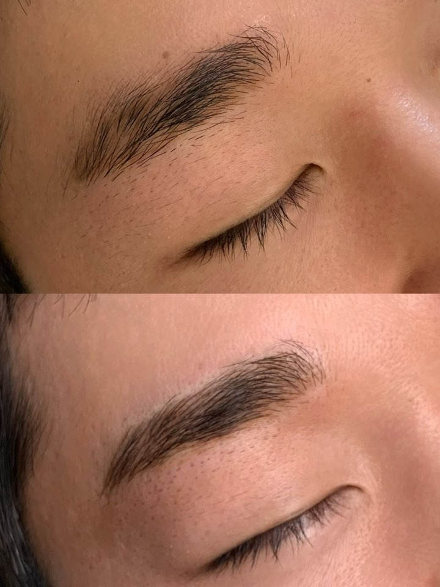
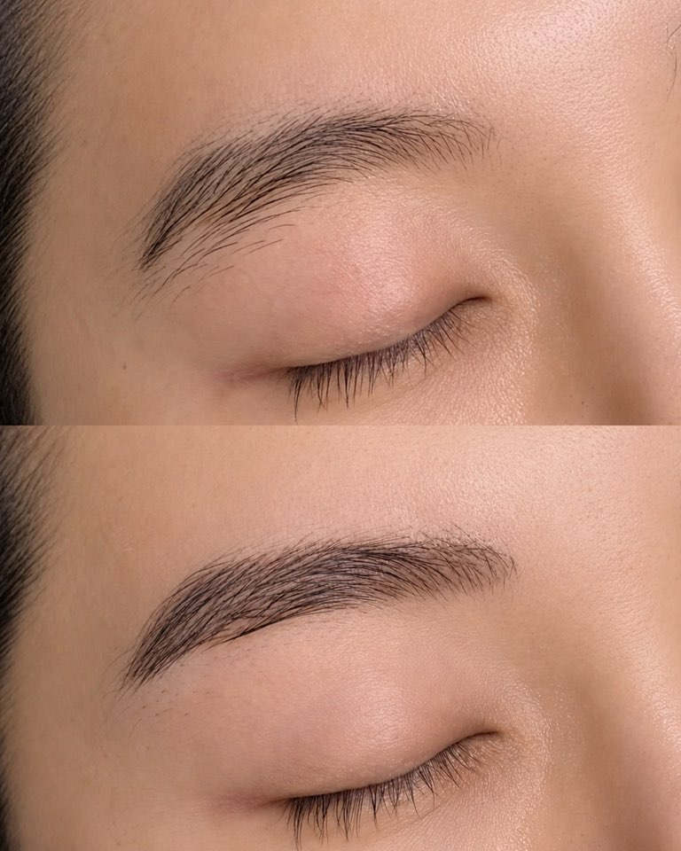
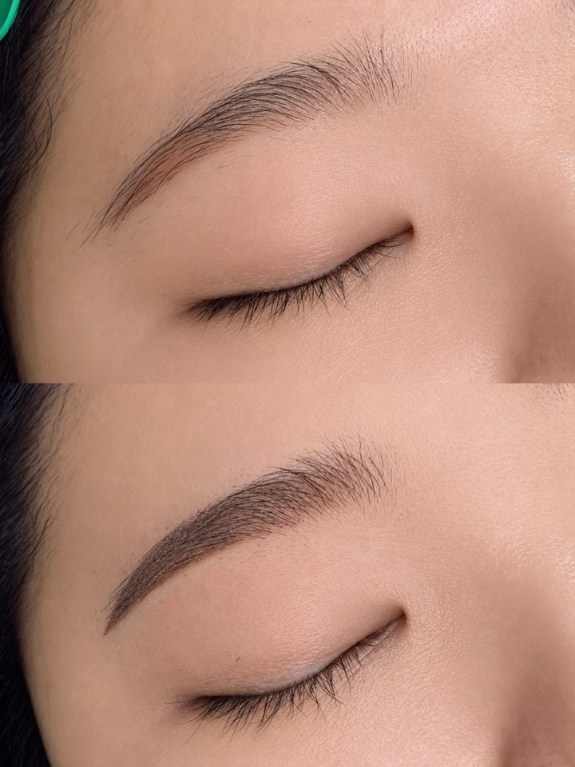
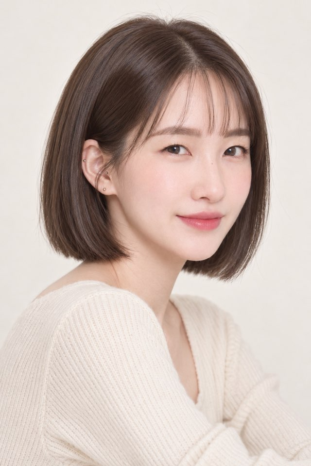

HAIR STROKE
헤어스트로크
눈썹 한 올 한 올의 흐름을 표현해, 시술 직후에도 자연스러운 결감을 목표로 합니다.
NATURAL BROW DESIGN · BY MINSUN
원래 내 눈썹의 결을 살리면서
얼굴의 분위기에 맞게 한 올씩 디자인합니다.
헤어스트로크 · 플러피브로우 · 1:1 디자인
THE BEAUTY OF BEING NATURAL
눈썹은 작은 차이로 인상을 바꿉니다. 비어 보이는 부분을 무조건 채우기보다, 지금 가진 결의 방향과 골격을 먼저 살핍니다.
김민선 원장은 얼굴형과 눈매, 원하는 분위기를 함께 보고 자연스럽게 어울리는 디자인을 제안합니다.
HAIR STROKE
눈썹 한 올 한 올의 흐름을 표현해, 시술 직후에도 자연스러운 결감을 목표로 합니다.
FLUFFY BROW
가볍고 부드러운 인상을 선호하는 분을 위한 디자인. 나에게 맞는 방식은 상담 후 결정합니다.
IF THIS SOUNDS FAMILIAR
01너무 진하고 어색하게 남지는 않을까?
02내 얼굴에는 어떤 디자인이 어울릴까?
03기존 잔흔이 있어도 가능할까?
04통증이나 유지기간은 어느 정도일까?
상담에서 먼저 확인하고, 내 얼굴에 어울리는 방향을 함께 찾습니다.
A DESIGN MADE FOR YOU
현재 눈썹과 평소 메이크업, 원하는 분위기를 확인한 뒤 디자인합니다. 시작 전에 스케치를 함께 보고 조율하는 과정이 중요합니다.
현재 눈썹 상태와 고민, 원하는 이미지를 듣습니다.
골격과 눈매에 맞춰 스케치하고 함께 확인합니다.
확인한 디자인을 바탕으로 자연스러운 결감을 표현합니다.
시술 후 관리 방법과 주의사항을 안내합니다.
REAL CLIENT WORK
플러피뷰티에서 제공한 눈썹 시술 사진입니다. 디자인과 색감은 원래 눈썹과 피부 상태에 따라 달라집니다.




DIRECTOR · KIM MINSUNDIRECTOR · KIM MINSUN
눈썹의 모양뿐 아니라 한 사람의 얼굴과 분위기를 함께 봅니다.
김민선 원장은 골격에 맞는 디자인과 편안한 상담 분위기를 중요하게 생각합니다. 원하는 느낌과 걱정되는 점을 충분히 이야기한 뒤 디자인을 함께 정합니다.
김민선 원장SIGNATURE OFFER
헤어스트로크 이벤트 가격은 미팅 기록을 바탕으로 표시한 초안입니다. 적용 기간과 포함 항목은 최종 확인 후 공개합니다.
GOOD TO KNOW
원하는 분위기와 현재 눈썹 상태를 먼저 확인하고, 디자인 스케치를 함께 조율합니다. 시술 직후의 색감과 회복 과정은 개인마다 다를 수 있어 상담에서 안내합니다.
느끼는 정도는 개인차가 있습니다. 상담에서 걱정되는 점을 먼저 말씀해 주세요. 진행 중에도 상태를 확인합니다.
피부 상태와 생활 습관, 관리 방법에 따라 차이가 큽니다. 일률적인 기간을 약속하기보다 개인 상태에 맞춰 상담해 드립니다.
잔흔의 색과 위치, 피부 상태에 따라 디자인 가능 범위가 달라집니다. 현재 눈썹 사진을 보내주시면 상담에 도움이 됩니다.
LET'S TALK ABOUT YOUR BROWS
시술이 처음이어도 괜찮습니다. 지금 고민과 원하는 분위기부터 편하게 이야기해 주세요.
카카오채널에서 상담하기 직접 예약 링크는 확인 후 연결합니다.